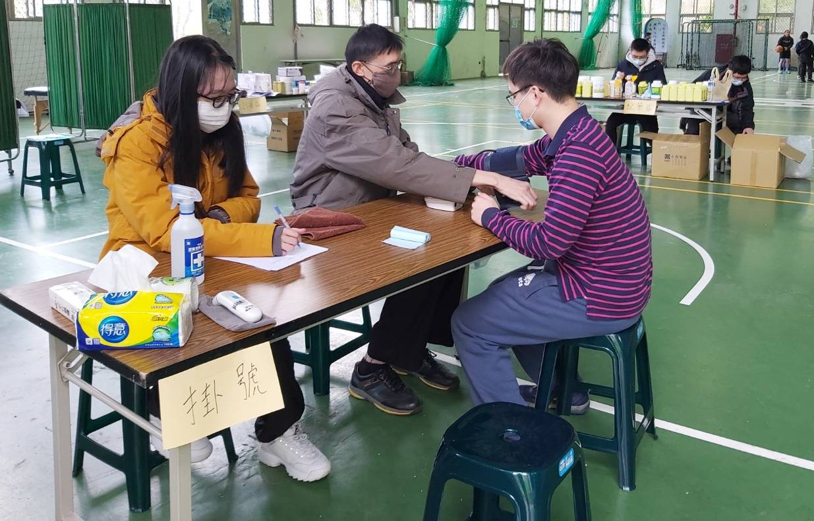
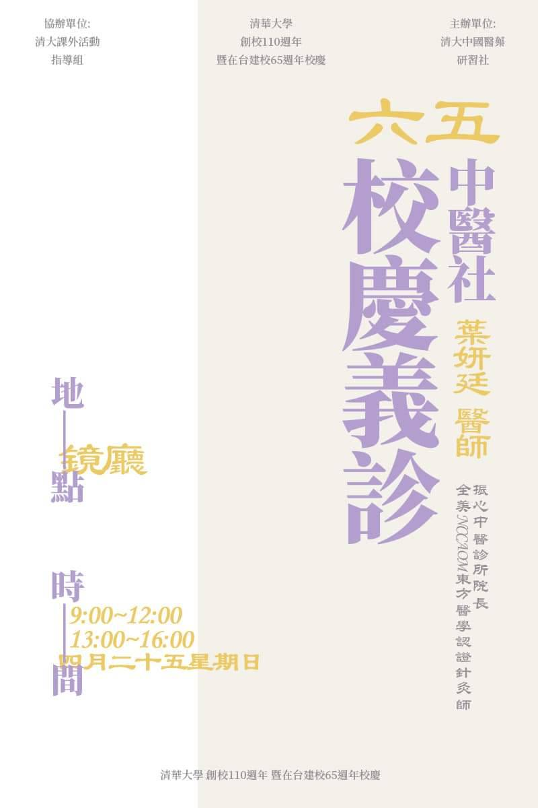

中醫社社長
職務概述
擔任國立清華大學中醫社社長期間，負責社團運營、活動規劃與偏鄉義診服務，推廣中醫知識並服務社區。透過領導社團，我學習到如何結合傳統智慧與現代管理，為更多人帶來健康與關懷。

中醫社活動照片

社團活動圖集
主要職責
- 統籌社團年度活動規劃與執行
- 組織並參與多次偏鄉義診活動
- 邀請中醫師進行講座與實作課程
- 管理社團財務與行政事務
- 招募新社員並培訓幹部團隊
義診服務
帶領社員前往偏鄉地區提供免費中醫諮詢與推拿服務，讓更多人認識中醫療法的價值。每次義診都經過精心策劃，從宣傳、場地聯繫到人力調度，確保服務品質與安全。

義診活動海報

義診宣傳海報
學習內容
- 中醫基礎理論：陰陽五行、經絡穴位
- 推拿手法與實作練習
- 常見病症的中醫診斷與處理
- 中藥材認識與應用
- 與專業中醫師交流臨床經驗
主要成果
- 成功舉辦5場偏鄉義診活動，服務超過200人次
- 社團人數成長50%，擴大中醫推廣影響力
- 建立與中醫診所的長期合作關係
- 培訓新一代社團幹部，確保傳承
- 獲得學校與社區的高度肯定
習得能力
- 領導與團隊管理能力
- 活動企劃與執行經驗
- 跨部門溝通與協調技巧
- 公關與對外聯繫能力
- 預算規劃與資源分配
- 危機處理與問題解決能力
心得反思
擔任中醫社社長的經歷讓我深刻體會到服務他人的意義，也培養了我的領導與組織能力。透過義診活動，我不僅學習到中醫知識，更學會如何與不同背景的人溝通，如何在資源有限的情況下完成目標。這段經歷對我日後從事生醫工程研發工作有很大的啟發，讓我更加重視技術應用的人文關懷面向。